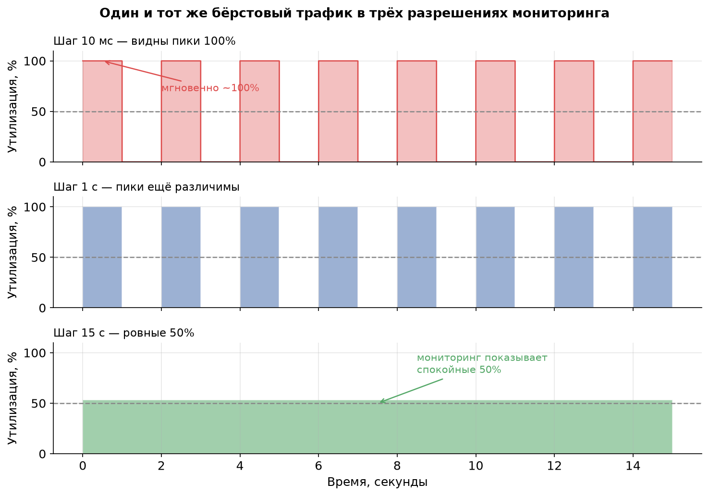
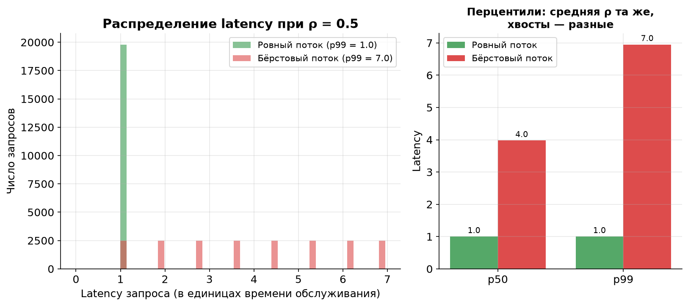
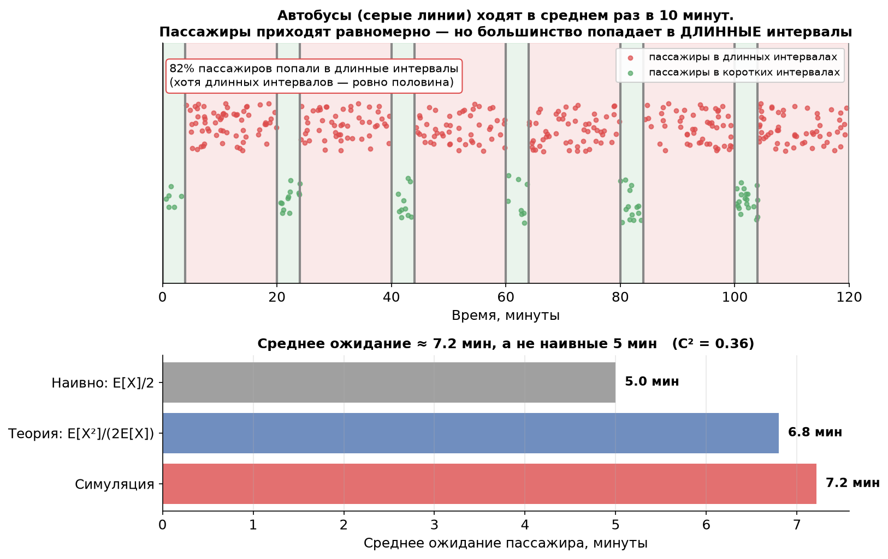

Урок 6. Микробёрсты и «парадокс времени ожидания»
TL;DR: Система может ловить таймауты при средней загрузке 50%, потому что внутри 15-секундного интервала мониторинга прячутся миллисекундные всплески, в которых мгновенная нагрузка близка к 100%. Усреднение прячет пики: чем крупнее шаг агрегации, тем «спокойнее» выглядит график. А парадокс инспекции (inspection paradox) объясняет, почему пришедший в случайный момент запрос почти всегда застаёт систему в самый неудачный момент — и откуда в формуле Поллачека — Хинчина берётся фактор $(1+C^2)/2$.
В уроке 5 мы вывели формулу Поллачека — Хинчина и увидели, что время ожидания взрывается не только из-за высокой утилизации $\rho$, но и из-за вариативности размеров задач (множитель $(1+C^2)/2$). Сейчас разберёмся, откуда этот множитель берётся «физически», и почему даже умеренная средняя загрузка не спасает от тормозов.
Микробёрсты: 50% на графике, таймауты в реальности
Представьте кофейню, где за час обслужили 30 человек. Бариста работал ровно полчаса из шестидесяти минут — отчёт говорит: «загрузка 50%, всё спокойно». Но если все 30 человек пришли тремя автобусными группами по 10, то в момент прихода группы перед стойкой выстраивается очередь, в которой кто-то ждёт свой капучино 15 минут и уходит, не дождавшись. Средняя загрузка честная — 50%. Опыт клиента — ужасный.
В highload-системах это и есть микробёрсты (microbursts) — кратковременные всплески нагрузки длиной в миллисекунды или единицы секунд, в которые мгновенная интенсивность входящего потока подскакивает в разы выше средней. Запросы внутри всплеска конкурируют за один и тот же GPU или одного консьюмера, выстраиваются в очередь и ловят таймауты, хотя на дашборде утилизация выглядит безобидно.
Числовой пример: всплеск + тишина = «ровные» 50%
Возьмём окно мониторинга 15 секунд. Пусть нагрузка устроена так:
- 1 секунда — всплеск: запросы летят с интенсивностью в 10 раз выше средней, мгновенная утилизация мощности ≈ 100%;
- 1 секунда — тишина: запросов нет, утилизация 0%.
Чередуем эти два состояния всё окно. Средняя утилизация:
$$\bar\rho = \frac{1 \cdot 100\% + 1 \cdot 0\%}{2} = 50\%.$$
Ровно столько же показал бы спокойный ровный поток, в котором запросы приходят равномерно и сервер загружен наполовину постоянно. Две совершенно разные реальности — одно и то же число на графике. В бёрстовом варианте половину времени система перегружена в две руки, а другую половину простаивает; в ровном — ей всегда комфортно.
Усреднение скрывает правду
Ключевая ловушка мониторинга: график утилизации — это уже усреднённая величина. Метрика «утилизация за 15 секунд» по определению размазывает всё, что происходило внутри этих 15 секунд, в одно число. Чем крупнее шаг агрегации, тем сильнее сглаживаются пики.

На графике — один и тот же трафик в трёх разрешениях:
- Шаг 10 мс: видно реальность — мгновенная нагрузка скачет между 0% и 100%.
- Шаг 1 с: пики ещё различимы, но картинка уже грубее.
- Шаг 15 с: ровная зелёная полоса на 50%. Мониторинг рапортует, что всё прекрасно, — а пользователи в этот момент ловят таймауты.
Усреднение математически корректно и при этом обманчиво: среднее значение существует, но оно ничего не говорит про то, что чувствует отдельный запрос. А запрос живёт не в усреднённом мире — он приходит в конкретную миллисекунду и либо попадает в тишину, либо в самую гущу всплеска.
Что с этим делать: смотреть на перцентили задержки
Практический вывод простой: средняя утилизация — плохой индикатор здоровья системы. Гораздо честнее смотреть на перцентили задержки (latency percentiles) — p99, p999. Они напрямую отвечают на вопрос «сколько ждал самый невезучий 1% запросов», и именно их портят микробёрсты, оставляя среднюю утилизацию нетронутой.
Симуляция ниже показывает разницу в лоб. Один сервер (FIFO), время обслуживания постоянное, утилизация $\rho = 0.5$ в обоих случаях. Отличается только распределение моментов прихода: ровный поток против бёрстового (запросы пачками).

При ровном потоке каждый запрос обслуживается мгновенно: p50 = p99 = 1 (в единицах времени обслуживания), очереди нет вообще. При бёрстовом — та же средняя загрузка 50%, но p99 вырастает в 7 раз: запросы из конца пачки ждут, пока сервер разгребёт всех, кто прибежал раньше. Средняя утилизация ничего об этом не сказала бы.
Мостик к итоговой работе курса. Если усреднённые метрики слепы к микробёрстам, то как вообще измерить мгновенную нагрузку? Один из приёмов — активно «прощупывать» систему лёгкими пробными задачами с высокой частотой и смотреть на их задержку (механизм вроде SelfPing). Это и есть тема итоговой практической работы — пока просто запомните, что прямое измерение задержки бьёт усреднённую утилизацию.
Парадокс инспекции: почему запросу всегда не везёт
Теперь — вторая половина урока, которая объясняет микробёрсты с другой стороны и заодно «закрывает долг» по формуле из урока 5.
Классическая формулировка про автобусы. Автобусы ходят «в среднем раз в 10 минут». Вы приходите на остановку в случайный момент. Сколько в среднем придётся ждать? Наивный ответ: «раз в среднем интервал 10 минут, а я попадаю в случайную его точку, то жду в среднем половину — 5 минут». И это неверно, если интервалы вариативны.
Дело в парадоксе инспекции (inspection paradox), он же waiting time paradox. Приходя в случайный момент времени, вы с большей вероятностью попадаете в длинный интервал, чем в короткий — просто потому, что длинные интервалы занимают больше места на оси времени. Вероятность попасть в интервал пропорциональна его длине. Короткие интервалы «проскакивают» мимо вас, длинные — «ловят».

На верхней панели интервалы между автобусами чередуются: 4 минуты (короткий) и 16 минут (длинный), среднее — ровно 10. Длинных интервалов ровно половина по количеству, но они занимают 80% временной оси. Пассажиры приходят равномерно — и 82% из них попадают в длинные интервалы. Их-то и ждёт долгое ожидание, которое тянет среднее вверх.
Формула среднего остаточного времени
Формализуется это средним остаточным временем (mean residual time) — сколько в среднем осталось ждать до конца интервала, в который вы случайно попали:
$$E[R] = \frac{E[X^2]}{2\,E[X]} = \frac{E[X]\,(1 + C^2)}{2},$$
где $X$ — длина интервала, а $C^2 = \dfrac{\operatorname{Var}(X)}{E[X]^2}$ — квадрат коэффициента вариации.
Смысл двух форм один и тот же:
- Первая форма $\dfrac{E[X^2]}{2E[X]}$ показывает, что ожидание определяется вторым моментом $E[X^2]$, а не только средним. А второй момент «штрафует» за длинные интервалы квадратично — поэтому редкие большие интервалы влияют на ответ непропорционально сильно.
- Вторая форма $\dfrac{E[X](1+C^2)}{2}$ раскладывает ответ на «наивную» половину среднего $\dfrac{E[X]}{2}$, домноженную на поправку $(1+C^2)$ за вариативность.
Проверим на автобусах. $E[X] = 10$, $E[X^2] = \frac{4^2 + 16^2}{2} = \frac{16 + 256}{2} = 136$, отсюда $C^2 = \frac{136 - 100}{100} = 0.36$:
$$E[R] = \frac{136}{2 \cdot 10} = 6.8 \text{ минуты}.$$
Не 5 минут, а 6.8 — на 36% больше наивной оценки. И это при умеренной вариативности. Симуляция на нижней панели графика подтверждает: фактическое среднее ожидание ≈ 7.2 минуты (небольшое расхождение с теорией — конечное число автобусов в окне).
Два важных частных случая:
- Детерминированные интервалы ($C^2 = 0$, автобусы строго по расписанию): $E[R] = \frac{E[X]}{2}$. Наивный ответ верен — но только здесь.
- Экспоненциальные интервалы ($C^2 = 1$, пуассоновский поток без памяти, как в уроке 4): $E[R] = E[X]$. Ждать придётся в среднем целый интервал, а не половину! Из-за отсутствия памяти неважно, как давно ушёл прошлый автобус.
Откуда в формуле Поллачека — Хинчина берётся $(1+C^2)/2$
Вот обещанная связь с уроком 5. Вспомните формулу для среднего времени ожидания в M/G/1:
$$W_q = \frac{\rho}{1 - \rho} \cdot \frac{1 + C_s^2}{2} \cdot E[S].$$
Множитель $\dfrac{1 + C_s^2}{2}$ — это ровно тот же парадокс инспекции, только применённый к времени обслуживания, а не к интервалам между автобусами.
Логика такая. Запрос, пришедший в систему, с некоторой вероятностью застаёт сервер занятым. Но раз сервер занят — значит, он сейчас обслуживает какую-то задачу. Какую? По парадоксу инспекции — скорее длинную, чем короткую (длинные задачи дольше «висят» на сервере и потому чаще попадаются). Пришедшему запросу нужно дождаться остаточного времени дообслуживания этой задачи, а оно в среднем равно $\dfrac{E[S^2]}{2E[S]} = E[S] \cdot \dfrac{1 + C_s^2}{2}$ — той самой формуле остаточного времени, что и для автобусов.
Иными словами: фактор $(1+C_s^2)/2$ в Поллачеке — Хинчине — это среднее «дообслуживание» той задачи, которую застал пришедший запрос. Чем разнообразнее размеры задач, тем чаще новичок натыкается на «дожёвывание» особо жирной — и тем дольше его ожидание.
Практический пример
- ML-инференс на GPU. Запросы на инференс разного размера (разные тензоры). Лёгкий запрос приходит и застаёт GPU посреди обработки тяжёлого батча — и вынужден ждать, пока тот дожуётся целиком. По парадоксу инспекции лёгкий запрос непропорционально часто застаёт именно тяжёлую задачу: она дольше занимает GPU. Среднее время инференса может быть скромным, а p99 — катастрофическим.
- Kafka. Консьюмер читает сообщения из топика по одному (FIFO). Если в потоке попадаются гигантские сообщения (например, большой батч событий в одном message), то очередное обычное сообщение придёт ровно в тот момент, когда консьюмер увяз в обработке гиганта. Consumer lag дёрнется вверх, хотя средний размер сообщения мал. Это микробёрст в чистом виде — и парадокс инспекции объясняет, почему «застать» обработку гиганта вероятнее, чем кажется.
Главное из урока
- Микробёрст — кратковременный всплеск нагрузки, в который мгновенная утилизация близка к 100%, даже если средняя — всего 50%. Запросы внутри всплеска конкурируют за ресурс и ловят таймауты.
- Усреднение скрывает пики: чем крупнее шаг агрегации мониторинга (15 с против 10 мс), тем «спокойнее» выглядит график. Средняя утилизация ничего не говорит про опыт отдельного запроса.
- Здоровье системы честнее показывают перцентили задержки (p99, p999), а не средняя утилизация: при той же $\rho = 0.5$ бёрстовый трафик раздувает p99 в разы.
- Парадокс инспекции: приходя в случайный момент, вы с вероятностью, пропорциональной длине интервала, попадаете в длинный интервал. Поэтому среднее ожидание больше наивного $E[X]/2$.
- Среднее остаточное время: $E[R] = \dfrac{E[X^2]}{2E[X]} = \dfrac{E[X](1+C^2)}{2}$. Для $C^2=0$ это $E[X]/2$, для пуассоновского потока ($C^2=1$) — целый интервал $E[X]$.
- Фактор $(1+C_s^2)/2$ в формуле Поллачека — Хинчина — это и есть среднее дообслуживание той задачи, которую застал пришедший запрос: чаще застаёшь длинную, потому что она дольше занимает сервер.
- На практике это «тяжёлый батч на GPU» и «гигантское сообщение у консьюмера Kafka»: новый запрос систематически застаёт ресурс на самой невыгодной для себя задаче.
В уроке 7 посмотрим, как с этим бороться при масштабировании: правило квадратного корня для запаса мощности и разница между дисциплинами FIFO и Processor Sharing — последняя как раз умеет гасить эффект вариативности.
Проверь себя
Задачи
Задача 1
Консьюмер Kafka обрабатывает сообщения, время обработки которых принимает одно из двух значений: 2 мс (обычное сообщение) или 50 мс (гигантский батч). Обычные сообщения составляют 90% потока, гигантские — 10%. Новое сообщение приходит в случайный момент и застаёт консьюмер занятым. Сколько в среднем ему придётся ждать, пока консьюмер дожуёт текущее сообщение (среднее остаточное время $E[R]$)?
Решение
Время обработки $S$ принимает значения 2 мс (с вероятностью 0.9) и 50 мс (с вероятностью 0.1).
Первый момент: $$E[S] = 0.9 \cdot 2 + 0.1 \cdot 50 = 1.8 + 5.0 = 6.8 \text{ мс}.$$
Второй момент: $$E[S^2] = 0.9 \cdot 2^2 + 0.1 \cdot 50^2 = 0.9 \cdot 4 + 0.1 \cdot 2500 = 3.6 + 250 = 253.6 \text{ мс}^2.$$
Среднее остаточное время: $$E[R] = \frac{E[S^2]}{2\,E[S]} = \frac{253.6}{2 \cdot 6.8} = \frac{253.6}{13.6} \approx 18.6 \text{ мс}.$$
Ответ: ≈ 18.6 мс. Обратите внимание: среднее время обработки сообщения — всего 6.8 мс, но ожидать дообслуживания приходится почти втрое дольше. Причина — те самые 10% гигантских батчей: они дают непропорционально большой вклад во второй момент $E[S^2]$ (квадрат «штрафует» за длинные задачи). Это и есть парадокс инспекции в действии — новое сообщение систематически застаёт консьюмер за обработкой гиганта.
Для сравнения, «наивная» оценка $E[S]/2 = 3.4$ мс — в пять с лишним раз меньше реальности.
Задача 2
Интервалы между запусками тяжёлого фонового джоба распределены так: $X = 5$ минут с вероятностью 0.5 и $X = 25$ минут с вероятностью 0.5. (а) Найдите средний интервал $E[X]$ и квадрат коэффициента вариации $C^2$. (б) Случайный наблюдатель приходит в произвольный момент — найдите среднее остаточное время $E[R]$ по обеим формам формулы и убедитесь, что они совпадают. (в) Какова доля времени, которую наблюдатель проводит «внутри» длинных интервалов (25 минут)?
Решение
(а) Средний интервал: $$E[X] = 0.5 \cdot 5 + 0.5 \cdot 25 = 15 \text{ минут}.$$
Дисперсия. Сначала второй момент: $$E[X^2] = 0.5 \cdot 5^2 + 0.5 \cdot 25^2 = 0.5 \cdot 25 + 0.5 \cdot 625 = 12.5 + 312.5 = 325.$$ $$\operatorname{Var}(X) = E[X^2] - E[X]^2 = 325 - 225 = 100.$$ $$C^2 = \frac{\operatorname{Var}(X)}{E[X]^2} = \frac{100}{225} \approx 0.444.$$
(б) Через второй момент: $$E[R] = \frac{E[X^2]}{2\,E[X]} = \frac{325}{2 \cdot 15} = \frac{325}{30} \approx 10.83 \text{ минуты}.$$
Через коэффициент вариации: $$E[R] = \frac{E[X](1 + C^2)}{2} = \frac{15 \cdot (1 + 0.444)}{2} = \frac{15 \cdot 1.444}{2} = \frac{21.67}{2} \approx 10.83 \text{ минуты}.$$
Обе формы дают ≈ 10.83 минуты — против наивной оценки $E[X]/2 = 7.5$ минут.
(в) Длинных и коротких интервалов поровну по количеству (по 50%), но доля времени, приходящаяся на длинные интервалы, пропорциональна их суммарной длине: $$P(\text{наблюдатель в длинном интервале}) = \frac{0.5 \cdot 25}{0.5 \cdot 25 + 0.5 \cdot 5} = \frac{12.5}{15} \approx 0.83.$$
Ответ: наблюдатель проводит около 83% времени внутри длинных интервалов, хотя по количеству их ровно половина. Именно это смещение и поднимает среднее ожидание выше наивного $E[X]/2$.